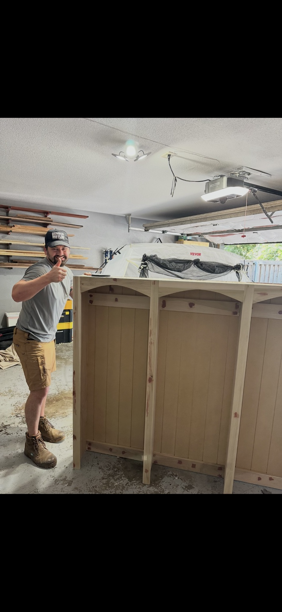
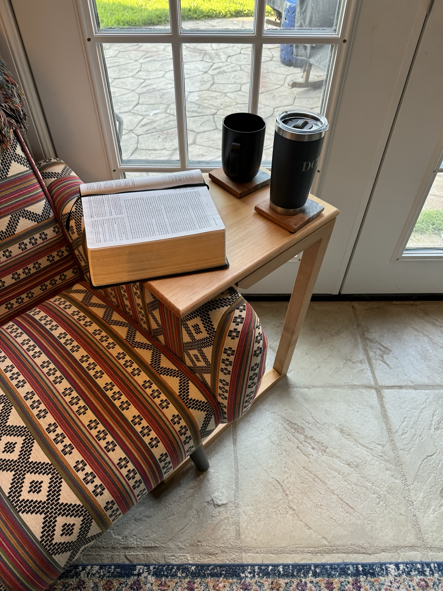

“Let us not become weary in doing good, for at the proper time we will reap a harvest if we do not give up.”
— Gal. 6:9
Meet Steve DiSibio
Building for my family.
Learning with every project.
I’m a husband, a dad to two young boys, and a woodworker in Texas. I build in our garage, making things for our home and sharing the decisions, mistakes, and progress along the way.
Read my story ↗
At home in Texas
Build Furniture and
a Family in Texas.
Texas is where we’re raising our boys and making a home. My woodworking fits into that life: time in the garage, projects for the people I love, and furniture that becomes part of our everyday routines.
DiSibio Builds carries a family name. My great-grandfather and grandfather ran DiSibio Builders, and this is my own chapter—building for my family while learning what this craft can become.
Explore the portfolio ↗Faith at the center
Bible-Believing
Christian.
My Christian faith is central to my life. My hope is that I bring glory to God in the work that I do.
This wonky C-Table I built early on is actually the table where I read my bible and drink my coffee nearly every morning.

Aspirational, but attainable.
Every year, the woodworking gets better.
Follow the projects, the problems, and the progress along the way.